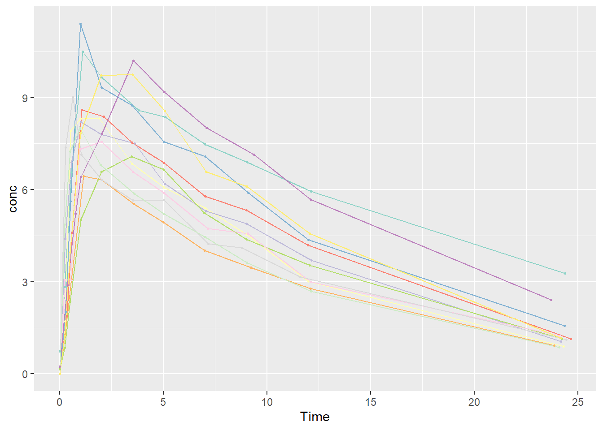
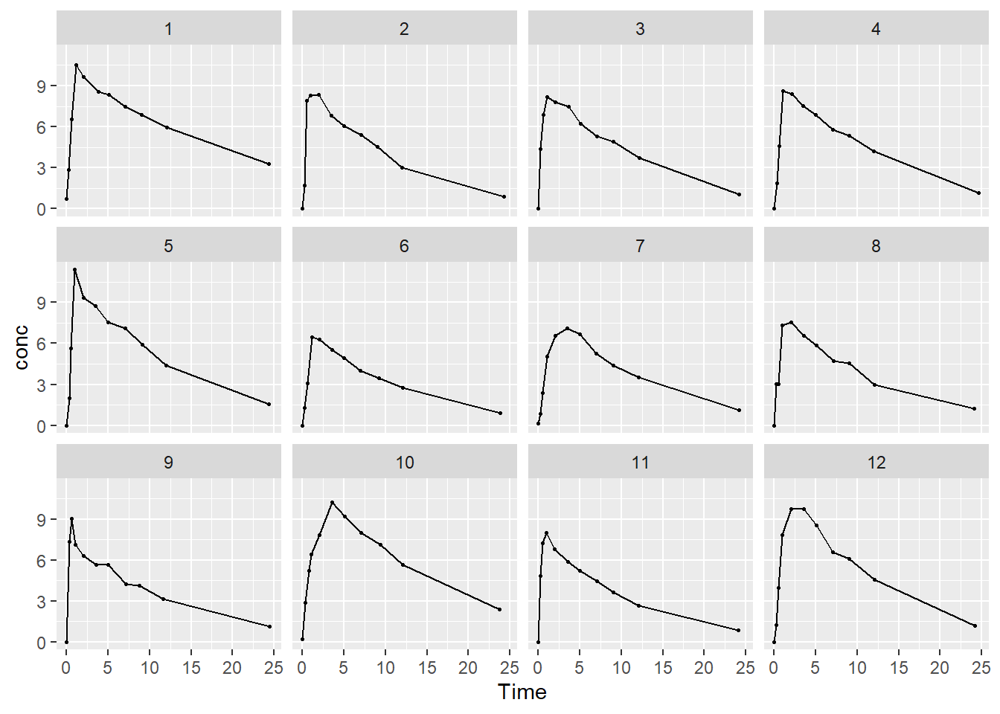
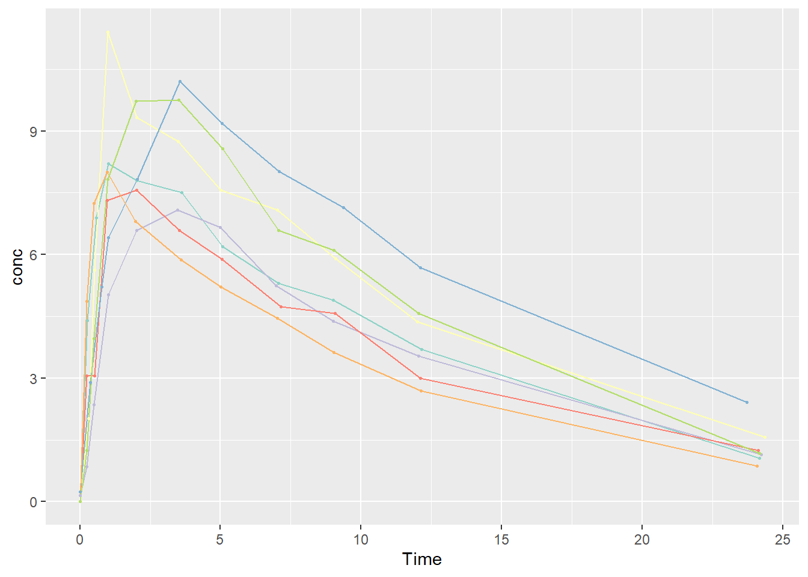
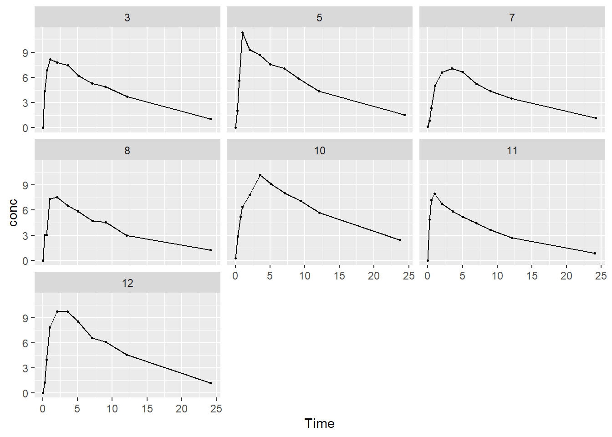
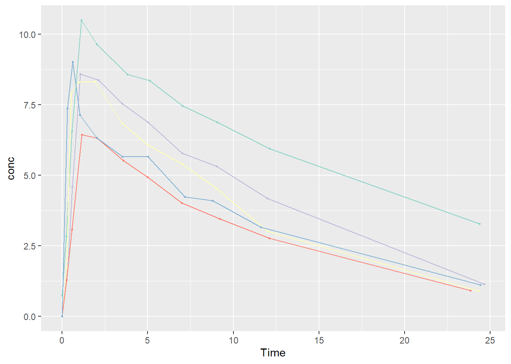
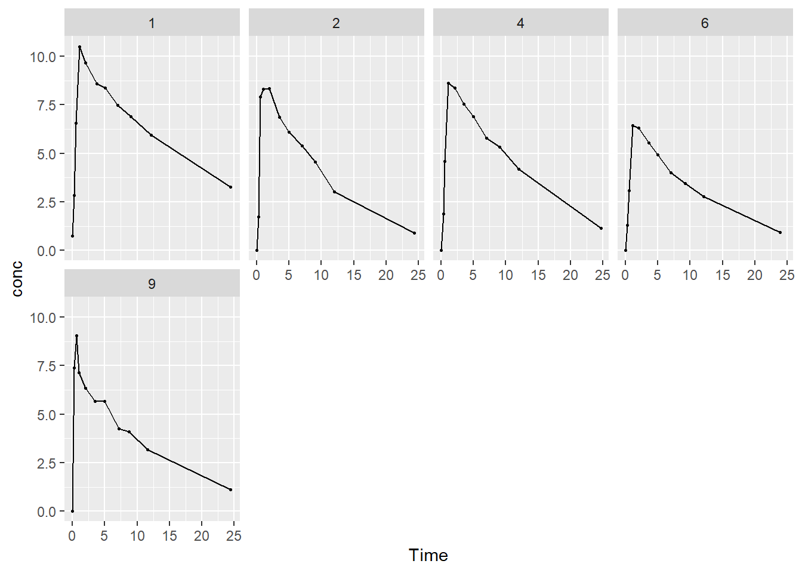

Data Manipulation
Theoph<-Theoph %>%
mutate(Subject=factor(Subject,levels=c("1","2","3","4","5","6","7","8","9","10","11","12")))
data.t0<-Theoph %>% filter(Time==0) %>%
mutate(Dose2=Dose*Wt)Data Summary
Theoph.unique<-distinct(Theoph,Subject,.keep_all=T)
sum_stats<-
list(
"Subjects" =
list(
"N" = ~length(unique(Subject))
),
"Dose"=
list(
"mean (sd)" = ~qwraps2::mean_sd(Theoph.unique$Dose, na_rm = TRUE),
"median (Q1, Q3)" = ~qwraps2::median_iqr(Theoph.unique$Dose, na_rm = TRUE),
"min" = ~min(Theoph.unique$Dose, na.rm = TRUE),
"max" = ~max(Theoph.unique$Dose, na.rm = TRUE)
),
"Weight"=
list(
"mean (sd)" = ~qwraps2::mean_sd(Theoph.unique$Wt, na_rm = TRUE),
"median (Q1, Q3)" = ~qwraps2::median_iqr(Theoph.unique$Wt, na_rm = TRUE),
"min" = ~min(Theoph.unique$Wt, na.rm = TRUE),
"max" = ~max(Theoph.unique$Wt, na.rm = TRUE)
),
"Time"=
list(
"mean (sd)" = ~qwraps2::mean_sd(Time, na_rm = TRUE),
"median (Q1, Q3)" = ~qwraps2::median_iqr(Time, na_rm = TRUE),
"min" = ~min(Time, na.rm = TRUE),
"max" = ~max(Time, na.rm = TRUE)
)
)
options(qwraps2_markup = "markdown")
summary_table(Theoph,sum_stats)| Theoph (N = 132) | |
|---|---|
| Subjects | |
| N | 12 |
| Dose | |
| mean (sd) | 4.63 ± 0.75 |
| median (Q1, Q3) | 4.53 (4.30, 5.04) |
| min | 3.1 |
| max | 5.86 |
| Weight | |
| mean (sd) | 69.58 ± 9.50 |
| median (Q1, Q3) | 70.50 (63.57, 74.43) |
| min | 54.6 |
| max | 86.4 |
| Time | |
| mean (sd) | 5.89 ± 6.93 |
| median (Q1, Q3) | 3.53 (0.59, 9.00) |
| min | 0 |
| max | 24.65 |
Concentration vs Time Tabs
Regular
All Subjects
plot1<-ggplot(Theoph,aes(x=Time,y=conc,group=Subject,colour=Subject))+
geom_line(size=.5)+
geom_point(size=.5)+
theme(legend.position = "none")+scale_color_brewer(palette = "Set3")
plot1
By Subject
plot1<-ggplot(Theoph,aes(x=Time,y=conc))+
geom_line(size=.5)+
geom_point(size=.5)+
theme(legend.position = "none") +
facet_wrap(~ Subject,nrow=3)+scale_color_brewer(palette = "Set3")
plot1
Dropdown
All Subjects
plot1<-ggplot(Theoph,aes(x=Time,y=conc,group=Subject,colour=Subject))+
geom_line(size=.5)+
geom_point(size=.5)+
theme(legend.position = "none")+scale_color_brewer(palette = "Set3")
plot1
By Subject
plot1<-ggplot(Theoph,aes(x=Time,y=conc))+
geom_line(size=.5)+
geom_point(size=.5)+
theme(legend.position = "none") +
facet_wrap(~ Subject,nrow=3)+scale_color_brewer(palette = "Set3")
plot1By Weight
Not Overweight
All Subjects
plot1<-ggplot(Theoph %>% filter(Wt<72) ,aes(x=Time,y=conc,group=Subject,colour=Subject))+
geom_line(size=.5)+
geom_point(size=.5)+
theme(legend.position = "none")+scale_color_brewer(palette = "Set3")
plot1
By Subjects
plot1<-ggplot(Theoph %>% filter(Wt<72),
aes(x=Time,y=conc))+
geom_line(size=.5)+
geom_point(size=.5)+
theme(legend.position = "none") +
facet_wrap(~ Subject,nrow=3)+scale_color_brewer(palette = "Set3")
plot1
Overweight
All Subjects
plot1<-ggplot(Theoph %>% filter(Wt>=72),
aes(x=Time,y=conc,group=Subject,colour=Subject))+
geom_line(size=.5)+
geom_point(size=.5)+
theme(legend.position = "none")+scale_color_brewer(palette = "Set3")
plot1
By Subjects
plot1<-ggplot(Theoph %>% filter(Wt>=72),
aes(x=Time,y=conc))+
geom_line(size=.5)+
geom_point(size=.5)+
theme(legend.position = "none") +
facet_wrap(~ Subject,ncol=4)+scale_color_brewer(palette = "Set3")
plot1